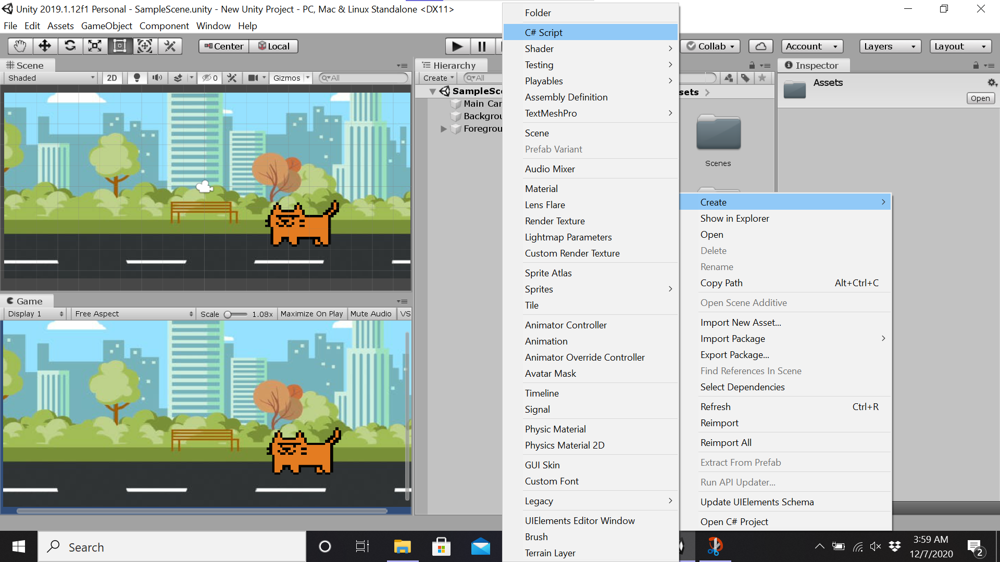
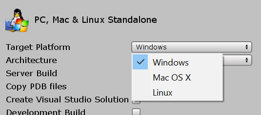

Developing a Game with Unity
Unity is the world's most popular game development engine. It runs on the C# language and is decently beginner-friendly with endless amounts of learning material available on its website.
You can download Unity here. You can either download the Student or Personal version of Unity, both are free.
Unity
Once you have Unity up and running, click the New Project button. Name it under the project name section, and choose if it will be 2D or 3D under template.
Once you are in the project window, click on the Layout dropdown at the top right of the interface. Select the 2 by 3 option. This is the most commonly used layout option because you can see all the different windows at once, but feel free to play around and find a view that you like the most.
The Windows
- Hierarchy Window
- Project Window
- Inspector Window
- Scene View
- Game View
Lists all the current GameObjects actively used in your game. All scenes will start with a Main Camera and a Directional Light.
Contains all the assets used by your game, you can organize these by folders such as Materials or Scripts.
Lets you configure/modify any GameObject. Selecting a GameObject in the hierarchy lists all the objects components and properties in inspector window. Some properties are position, physics, C# scripts attached to objects.
The screen you use to edit the visual aspects of your game.
How the player will see your game.
Making and Manipulating your GameObject
A GameObject is simply an object in your game. To create your first GameObject, to go GameObject > 3D Object > Cube in the toolbar at the top of the page.
To add functionality, click on the Assets folder in the Project window. In the Assets folder, right click and go to Create > C# Script. This will load up your text editor, where you will write your C# code. Once you are done writing the code, you can just save and exit out of the text editor window. Creating the script will look like this:

Back in the main window, drag and drop your script onto the GameObject (in the hierarchy window) you would like it to affect.
Running Your Game
To run your game as a test, click on the Play  button at the top-middle of the window. Soon, your
game
will start in the Game View window, and you can play it with the controlls you initialized.
button at the top-middle of the window. Soon, your
game
will start in the Game View window, and you can play it with the controlls you initialized.
To deploy your game, click File > Build Settings..., choose your operating system in Target Platform. It should look like this:

Click Build and Run.